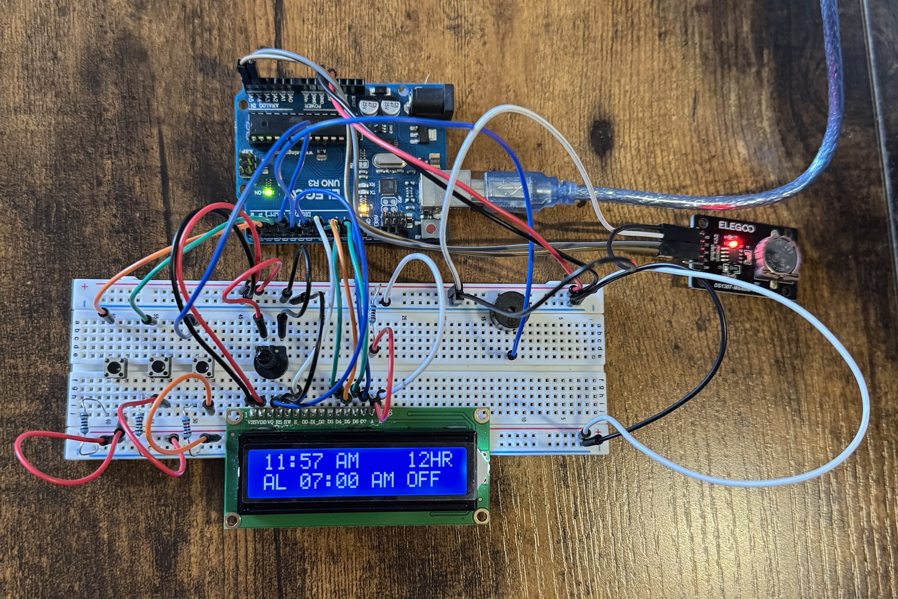
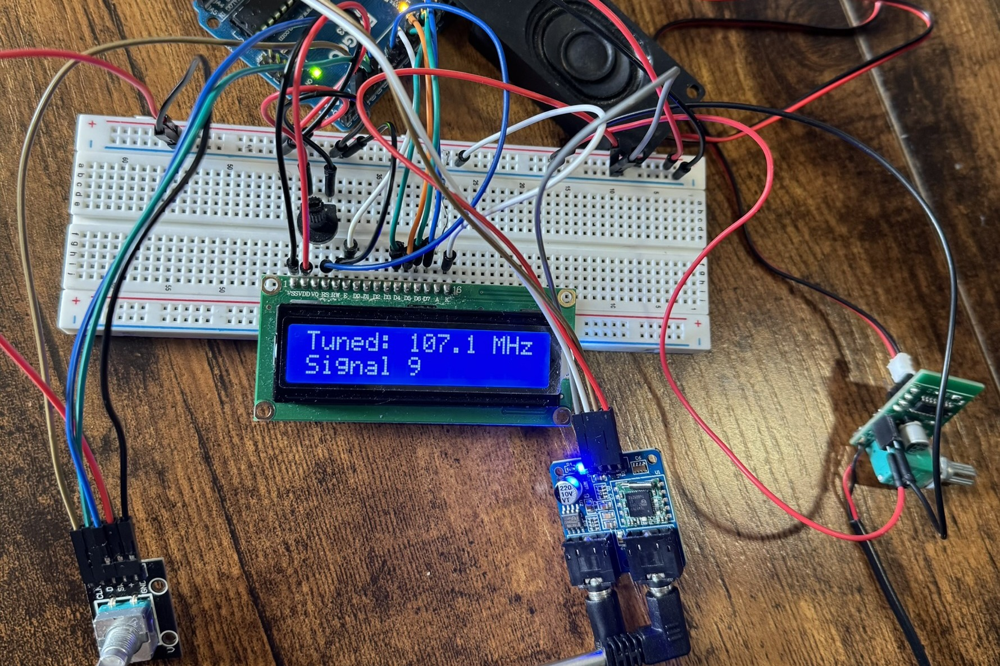
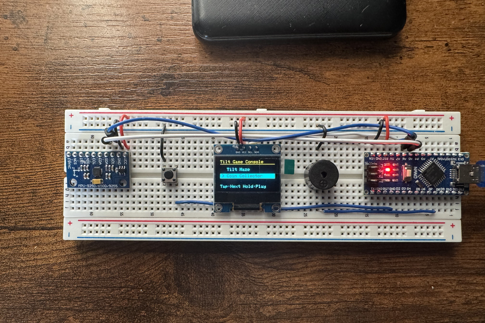
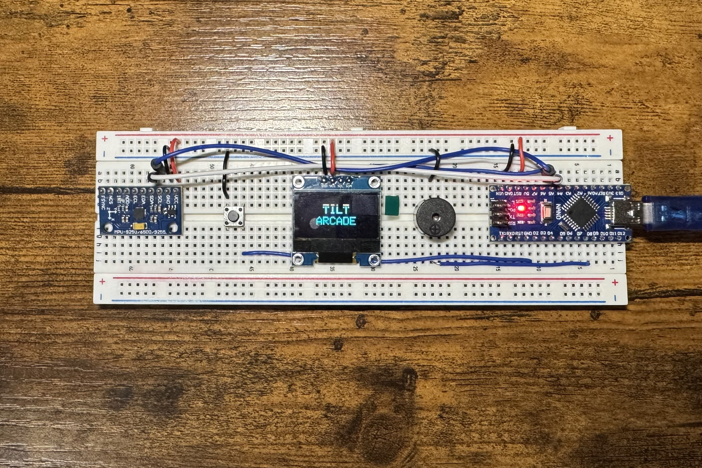
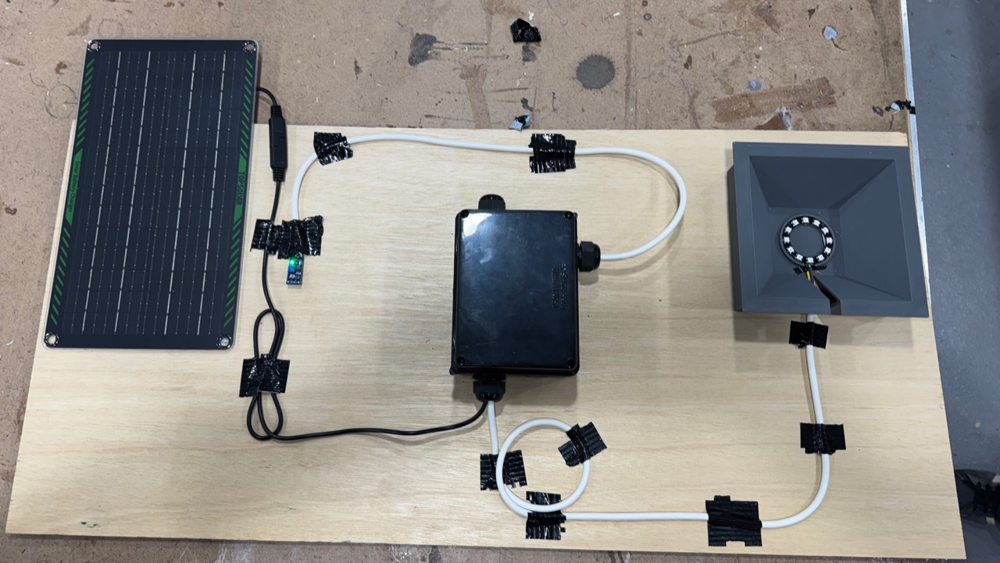
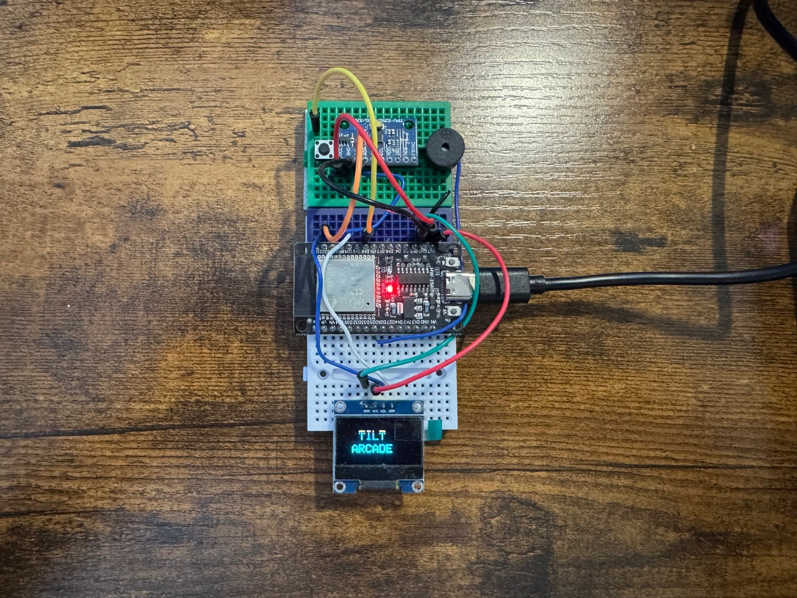
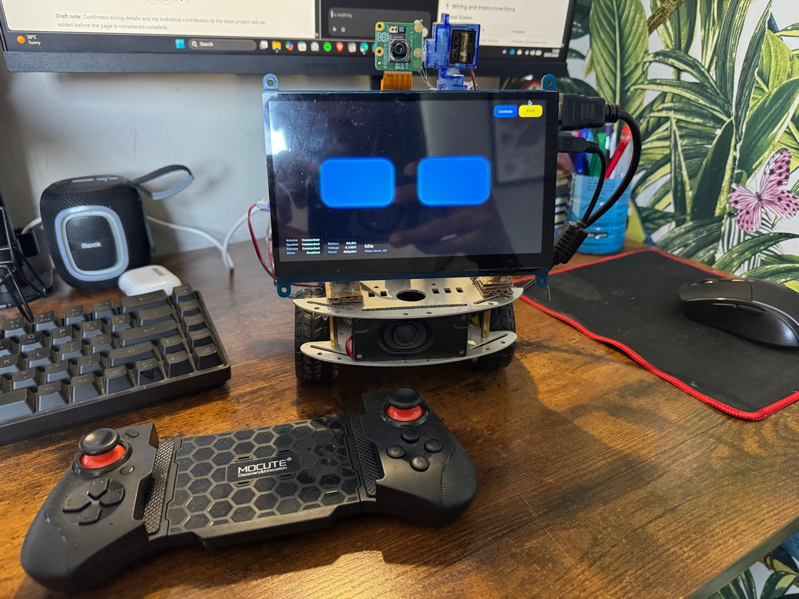

A beginner-friendly robot car that uses an ultrasonic sensor, Arduino UNO, and motor shield to detect and avoid obstacles — no remote needed. Read More →
Published: July 07, 2025
Are you new to Arduino? Check out my full guide on Getting Started with Arduino. Click here to check it out →
What You’ll Get Inside:
A beginner-friendly robot car that uses an ultrasonic sensor, Arduino UNO, and motor shield to detect and avoid obstacles — no remote needed. Read More →
Published: July 07, 2025

A simple parking-sensor-style project that uses a speaker and ultrasonic sensor to beep when close to objects. Read More →
Published: July 24, 2025

A sound sensor detects claps or loud taps and toggles an LED on or off — like a hands-free clap switch lamp. Read More →
Published: August 27, 2025

A water level indicator that lights up a series of LEDs based on how much water the sensor is submerged in — the more water, the more LEDs turn on. Read More →
Published: January 15, 2026

A DHT11 sensor and LCD1602 display work together to show real-time temperature and humidity data. Read More →
Published: January 15, 2026

A digital alarm clock built with an Arduino UNO, LCD1602, and RTC module. It keeps accurate time even when powered off, lets you set alarms using buttons, supports 12/24‑hour modes, and sounds a buzzer when the alarm goes off. Read More →
Published: January 15, 2026

Build an FM radio using the TEA5767 module, a rotary encoder for tuning, LCD display for frequency, and speaker output via a PAM8403 amplifier. Read More →
Published: January 16, 2026

A tilt-controlled mini game console built with an Arduino Nano, OLED display, motion sensor, buzzer, and one button. The final build includes a playable Tilt Maze, a timed Coin Collector game, a saved high score, and a simple menu interface. Read More →
Published: April 23, 2026

A tiny tilt-controlled Arduino arcade console with an OLED display, motion controls, sound effects, saved high scores, and two playable games. Built using an Arduino Nano, SSD1306 OLED display, MPU-6500 motion sensor, buzzer, and a single push button. Read More →
Published: May 8, 2026

A team-built outdoor lighting system that combines solar generation, battery storage, voltage regulation, Arduino day/night sensing, and automatic light control inside a weather-resistant prototype. Read More →
Published: July 27, 2026

An expanded ESP32 version of my tilt-controlled console, featuring six interactive modes, motion controls, sound effects, and a larger foundation for experimenting with OLED games and visual demos. Read More →
Published: July 27, 2026
Robotics projects that combine embedded hardware, computer vision, voice interaction, and AI-assisted control.

Bob is a modular AI rover built around a Raspberry Pi and an Arduino-compatible motor controller, bringing together voice interaction, a browser dashboard, camera experiments, expressive face displays, and deterministic movement controls. Read More →
Published: July 27, 2026
Web products and software systems focused on useful, thoughtful digital experiences.
A Nigeria-first news aggregation platform that brings major Nigerian stories into one clean feed, turns repeated coverage into concise summaries, and links readers to the original trusted sources. Read More →
Published: July 27, 2026